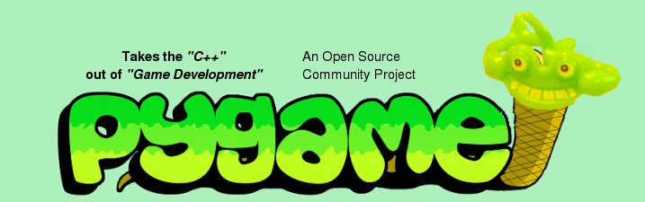

gem install rubygame
| Port of: | Bindings to: |
|  |
class GameShell attr_reader :screen def initialize(size) Rubygame.init @screen = Screen.new(size) end def run @running = true while(@running) do step end Rubygame.quit end def step @screen.update end end GameShell.new( [400, 300] ).run
Create a clock and an event queue:
def initialize(size) ... @clock = Clock.new {|c| c.target_framerate = 40 } @queue = EventQueue.new end
In each step, pull events from the queue and handle them:
def step @queue.fetch_sdl_events @queue.each do |event| case event when QuitEvent @running = false end end @screen.update @clock.tick end
Surfaces are a 2D grid of pixels. You can load images into them:
surface = Surface.load( "an_image_file.bmp" )
And you can draw on them directly. Lets make a ball:
ball = Surface.new( [9,9] ) ball.draw_circle_a( [4,4],4,[0xff]*3 ) ball.draw_circle_s( [4,4],4,[0xff]*3 )
And draw it onto the screen:
ball.blit( screen, [10,10] )
You can't move anything in RubyGame. You can only draw things on surfaces.
class Ball include Sprites::Sprite
def initialize @image = Surface.new([9,9]) #... and draw the ball etc. @rect = @image.make_rect
def update rect.x, rect.y = (rect.x + @vx).to_i, (rect.y + @vy).to_i end
class Paddle include Sprites::Sprite def initialize(max_x, speed) @image = Surface.new([50,10]) @image.fill([0xff] * 3) @rect = @image.make_rect @max_x = max_x - rect.width @speed = speed @vx = 0 end def update if (0..@max_x).include?( rect.x + (@vx * @speed) ) rect.x += (@vx * @speed) end end def move_left @vx = -1; end def move_right @vx = 1; end def stop_moving @vx = 0; end end
@background = Surface.new(@screen.size)
@computer = Paddle.new(@screen.width, 5)
@player = Paddle.new(@screen.width, 5)
@ball = Ball.new
@sprites = Sprites::Group.new([@player, @computer, @ball])
@sprites.extend Sprites::UpdateGroup
def step @sprites.undraw(@screen, @background) @sprites.update @sprites.draw(@screen) ... end
case event
when QuitEvent
@running = false
when KeyDownEvent
if event.key == K_LEFT
@player.move_left
elsif event.key == K_RIGHT
@player.move_right
end
when KeyUpEvent
if event.key == K_LEFT || event.key == K_RIGHT
@player.stop_moving
end
end
collide_sprite? method to check for collisions
def check_for_bounce if @ball.collide_sprite?(@player) @ball.paddle_bounce(@player) elsif @ball.collide_sprite?(@computer) @ball.paddle_bounce(@computer)
elsif @ball.rect.left < 0 || @ball.rect.right > @screen.width
@ball.vx = -@ball.vx
elsif @ball.rect.top < 0
@queue << GameOver.new(:player)
elsif @ball.rect.bottom > @screen.height
@queue << GameOver.new(:computer)
end
end
Latest rubygame release contains an alternative OO event handling mechanism
Lets us get rid of:
case event
when QuitEvent
@running = false
when GameOver
puts event.winner
@running = false
when KeyDownEvent
if event.key == Rubygame::K_LEFT
@player.move_left
elsif event.key == Rubygame::K_RIGHT
@player.move_right
end
when KeyUpEvent
if event.key == Rubygame::K_LEFT || event.key == Rubygame::K_RIGHT
@player.stop_moving
end
end
There are four main components to the event handling:
EventTriggers
MouseMoveTrigger, AndTrigger, more...
EventActions
MethodAction, BlockAction, more...
EventHooks
EventTrigger with an EventHook
EventHandlers
Handles invocation of EventHooks
HasEventHandler to the game and sprites:
include EventHandler::HasEventHandler
def initialize(size) ... @queue.enable_new_style_events make_magic_hooks(QuitRequested => lambda { @running = false }) end
@player.make_magic_hooks( :left => :move_left,
:right => :move_right,
KeyReleaseTrigger.new( :left ) => :stop_moving,
KeyReleaseTrigger.new( :right ) => :stop_moving )
# Register the object to receive all events. # Events will be passed to the object's #handle method. def register( *objects ) objects.each do |object| append_hook( :owner => object, :trigger => YesTrigger.new, :action => MethodAction.new(:handle) ) end end
register *@sprites